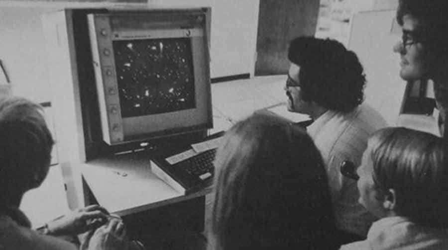

I když označení esport se začalo používat až po roce 2000, jakýsi začátek esportu můžeme mapovat už od vzniku samotných videoher. První událostí, která by se dala považovat za esportový turnaj mezi sebou v říjnu 1972 uspořádali studenti na Stamford University ve hře Spacewar. Cena za první místo byla roční předplatné Rolling Stones magazine. Avšak první opravdu oficiální soutěž proběhla až roku 1980, a o ve hře Space Invaders. Šampionátu Space Invaders championship se zúčastnilo kolem 10000 hráčů a turnaj se dočkal velké mediální pozornosti.
V osmdesátých letech se začalo v mnoha hrách objevovat tzv. highscore. Tvůrci her se rozhodli zaznamenávat nejlepší dosažené výsledky, dokonce se zaznamenávaly v Guinnesově knize rekordů. To mnoho hráčů motivovalo k trénování a překonávání těchto výsledků. V devadesátých letech s rozmachem internetu se změnila i herní scéna. Hráči se mohli propojit přes internet a mohli vzniknout multiplayerové hry jak je známe dnes. V roce 1997 se konal Red Annihilation tournament ve hře Quake. Turnaje se účastnilo kolem 2000 soutěžících a je považován za první Esport event. Jako hlavní cenu tohoto turnaje věnoval jeden z tvůrců Quake své Ferrari 328 GTS.
V roce 1998 vyšel nový titul, který se stal v této nové esportové scéně velice úspěšný. Starcraft se stal rychle velice oblíbeným. Značka se stala tak úspěšnou, že její následovník Starcarft 2 dodnes patří mezi nejznámější tituly na progamingové scéně. V roce 2002 jevydán herní titul, který dá vzniknout novému žánru her, které se stanou jedny z nejúspěšnějších v tomto odvětví. Jedná se o strategickou hru Warcraft 3 a o mód který později dostane. Defense of the Ancients, nebo zkráceně DotA položí základ novým MOBA hrám. V dnešní době už jsou esportové turnaje na každodenním pořádku.
Turnaj ze hry Spacewar
Ilustrační obrázek
